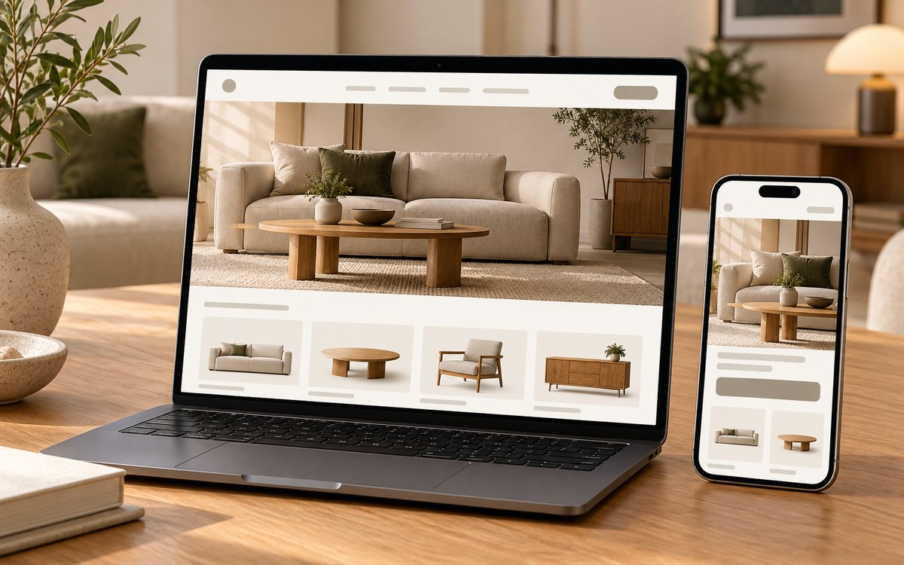

E-commerce and growth
Navar Furniture: WooCommerce build and growth
Role: owned the build and the marketing · Jul 2025 - Present
This work earned me a Digital Marketing Excellence Award from Navar Furniture in May 2026.